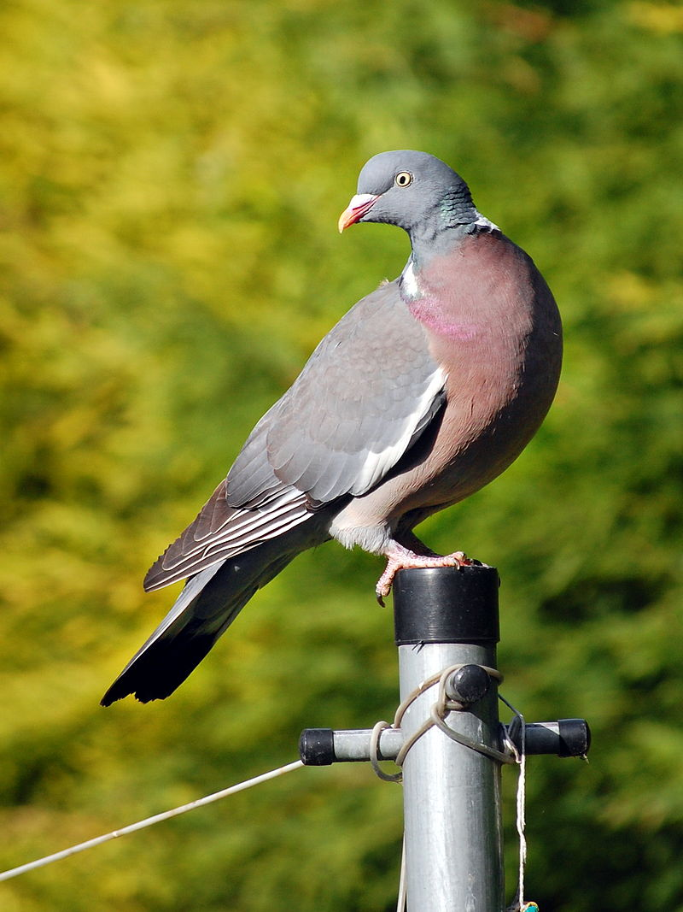

Ptaki
Bardzo lubię ptaki i są to mojhe ulubione zwierzęta. Interesują mnie one, ponieważ są bardzo ciekawe oraz nietypowe w stosunku do innych zwierząt.
Ptaki to stworzenia zamieszkujące planetę ziemię. Mają pióra i skrzydła oraz dzioby. Ptaki mogą być drapieżne, roślinożerne, wszystkożerne oraz padlinożerne. Posiadając takiego osobnika w domu, mogę stwierdzić iż nie są to stworzenia inteligentniejsze od ssaków. Niektóre ptaki, np. kruki są jednak bardzo inteligentne i potrafią wykorzystywać np. patyki jako narzędzia do zdobycia jedzenia.
Ptaki mieszkają tak naprawdę w każdym miejscu na ziemi, nawet na antarktydzie. Mają bardzo dobry wzrok i widzą wiele barw oraz szczegółów. Ich wzrok jest nieporównywalnie lepszy od ludzkiego. Ptaki, które prowadzą dzienny tryb życia w nocy widzą bardzo małą lub nie widząc nic. Niektóre ze zwierząt tego gatunku prowadzą nocny tryb życia. Dzięki temu, mogą widzieć w ciemności tak dobrze, jak inne ptaki w ciągu dnia. Ich aktywność wzrasta wieczoem i w nocy, a w ciągu dnia zazwyczaj odpoczywają i śpią. Stworzenia te są bardzo wrażliwe na zmienay w swoim otoczeniy, dostrzegają nawet najdorbniejsze z nich. Ptaki pierzą się, czyli zmieniaj a pióra z letnich na zimowe i na odwrót, około dwa razy do roku.
Niektóre ze zwierząt tego gatunku są stworzone do życia w wodzie i np. kaczki mają specyficzne upierzenie, które umożliwia im nie przemakanie. Mają również specjalną błonę między palcami u łap przez co łatwo jestt im pływać. Ptaki, takie jak często spotykane gołębie, albo żyjące w górach kruki łatwo jest oswoić. Kruki ze względu na swoją inteligencje szybko dostrzegają, że człowiek jest nie groźny dając ptaku jedzenie. Golębie również łatwo się oswajają z tego powodu
Papugi są również łatwe do oswojenia, ze względu na to, że są one zwierzetami stadnymi. Niektóre ptaki mają zdolnośc naśaldowania dźwięków. Papugi mają tę umiejętność szczególnie rozwiniętą. Można nauczyć je powtarzać ludzką mowę, a najlepszym ptakiem do tego jest papuga Żako, której powtarzanie słów przychodzi bardzo łatwo.